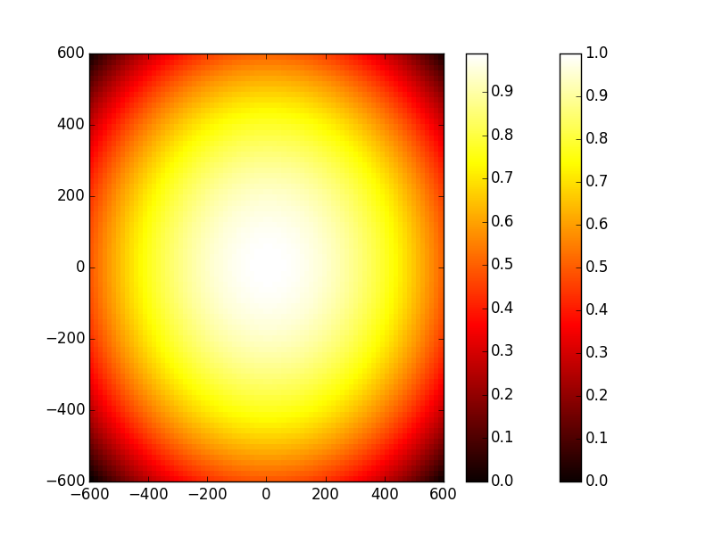
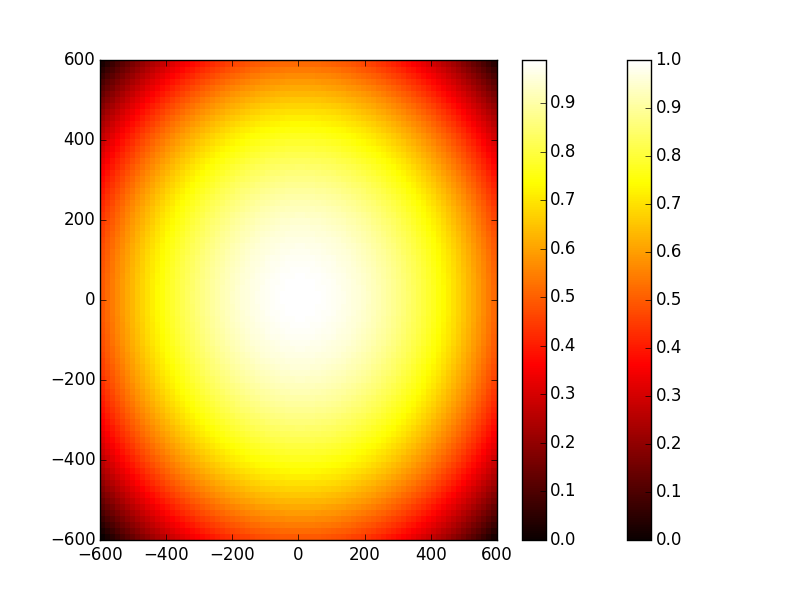
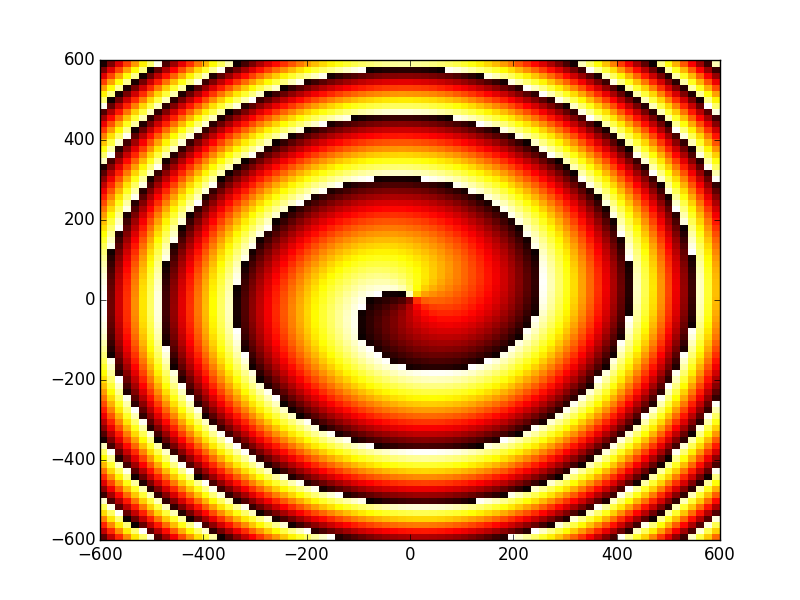
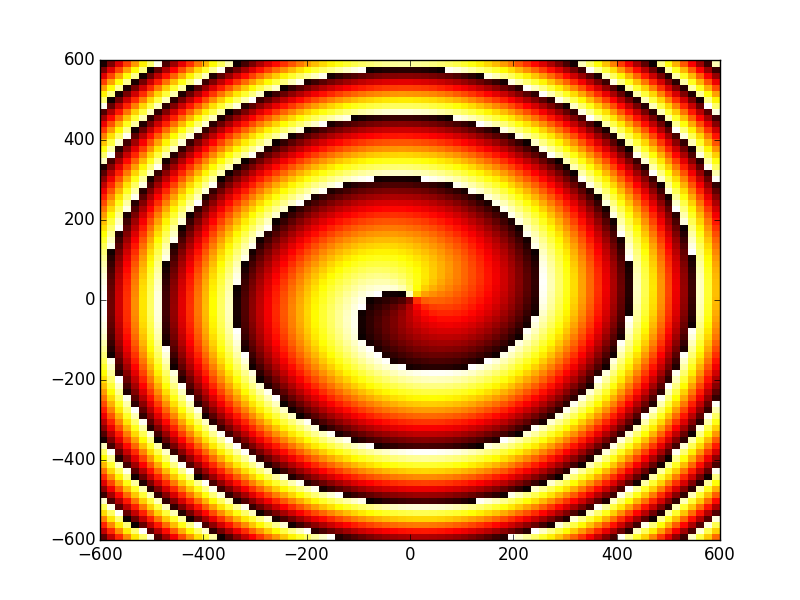

Tutorial 9 - Fresnel propagation module¶
In some of the previous tutorials we used the Fresnel propagation module that comes with OpenCavity, mainly to calculate the output beam for 1d and 2D cavity systems. And also with Bessel-Gauss cavities to show how the Bessel beams propagate especially in their non-diffracting region. In this tutorial we use the Fresnel propagation module to do beam transforming using a phase function as it is usually realized practically using phase-plates and diffractive elements or spatial light modulators (SLMs) to transform the phase structure of a given beam.
First we generate a fundamental Gaussian beam using Hermite-Gauss beams generator (HgBasis function) then we see how to transform it to a donut-shaped one also known as vortex-beam using a phase mask. This beam has a helical wavefront rather than parallel one as in fundamental Gaussian beams as we have already seen. In the second part of the tutorial we design a Mach-Zehnder interferometer to see the phase singularity of the donut beam, and understand better why it is called a vortex. The objective of this tutorial is to become familiar with:
- Beam generator module
- Fresnel propagator and use phase masks in addition to paraxial elements
- Superimpose and move beams on detectors surface to get interference result.
First of all let’s generate the Gaussian beam we are going to use through this tutorial, for this we use the function generate_gh(n,m,x,y,z)
that returns the E-field of Hermite-Gauss beam of order n,m at coordinates (x,y,z). We can use this function in a quite flexible way, for
example to generate 1D beam profile by giving it an 1D array along one spatial axis (x ,y or z) and 2 constants for the remaining ones .
Or by giving it 2D mesh-grids to construct 2D intensity profile HG beams at a given `z`coordinate as in this tutorial.
the function is located in HgBasis class in``beams`` module, this class holds properties common to all the beams of the basis set.
As always we start by importing modules we need.
In [1]: from opencavity.beams import HgBasis
In [2]: from opencavity.propagators import FresnelProp
In [3]: import numpy as np
In [4]: import matplotlib.pylab as plt
In [5]: import math
Then we generate a fundamental Gaussian beam (n=m=0) at wavelength =1 and waist =100 (in wavelength unit say microns for example).
In [6]: waist=100; waist_x=waist; waist_y=waist; wavelength=1
In [7]: H=HgBasis(wavelength,waist_x,waist_y) #creating the Hermite-Gauss basis with initial waist equals to 100 microns
In [8]: z=0.000000000000000001 #(z=0, small value rather than '0' to prevent division by 0)
In [9]: import matplotlib.pylab as plt
In [10]: H=HgBasis(1,waist_x,waist_y) #creating the Hermite-Gauss basis with initial waist equals to 100 microns
In [11]: x=np.linspace(-6*waist, 6*waist,80); y=x # two 1D vectors
In [12]: X,Y=np.meshgrid(x,y) # we use numerical python 'np' to generate a 2D meshgrid.
In [13]: tem00=H.generate_hg(0, 0, X, Y, z) # generate TEM00 mode
In [14]: plt.pcolor(x,y,np.abs(tem00)); plt.set_cmap('hot'); plt.colorbar(); # 2D plot/ colormap /colorbar
In [15]: plt.pcolor(x,y,np.angle(tem00)); # phase map
In [16]: plt.show()
 

{kind=link}
Now we want to transform this beam to a donut-shaped one, for this we need a helical phase mask (phase-plate of SLM), this phase mask has the function \(phase(x,y)=atan(y/x)+\frac{1-sign(x)}{2}\). Obviously one have to manage the special case of x=0 which gives three cases:
In third case (x=y=0) we have a singular point(the phase is not defined) but let’s just take 2 pi), it is important to note that the mask phase we are making acts as a
phase plate (add a certain amount to the beam phase) so just as we have seen with lenses its function takes the form \(exp(j\times phase(x,y))\). Indeed, in numerical
python np we can use arctan2(y,x) an element-wise arc tangent function that choose the quadrant correctly.
In [17]: n=x.size # size of the array 'x'
In [18]: phase=np.ones((n,n))+1j*np.ones((n,n))
In [19]: m=2*np.pi
In [20]: for kx in range(n):
....: for ky in range (n):
....: phase[kx,ky]=np.exp(1j*m*(np.arctan2(y[ky],x[kx]))/(2*np.pi))
....:
In third case (x=y=0) we have a singular point(the phase is not defined) but let’s just take 2 pi), it is important to note that the mask phase we are making acts as a phase plate (add a certain amount to the beam phase) so just alike we have seen with lenses its function takes the form :math: exp(jtimes phase(x,y)).
We consider the beam we generated is a collimated one (plane wavefront) to transform it we just multiply it by the phase function and propagate it using FresnelProp following
the steps we sown in previous tutorials:
- create the paraxial propagation matrix of the propagation system.
- create a propagator object
- set the initial beam and the propagation matrix in the propagator
- do 1D/2D propagation using
propagate1D_ABCD(x2)/propagate2D_ABCD(x2,y2)function.
Where (x2,y2) are vectors defining the propagation plane (result) that one can consider as the detector surface.
Before starting to that let’s take a look at the interferometer.

The goal here is to propagate to have to have two different optical paths and therefor two versions of the beam having different radius of curvature of the wavefront on the detector.
In [21]: L1=50*1e3; L2=190e3; L3=120e3; L4=140e3;
In [22]: f1=50*1e3; f2=60e3; #converging lens FL1=50mm, FL2=60mm
ABCD matrix of interferometer’s first arm
In [23]: M1=np.array([[1, L1],[0, 1]]);
In [24]: M2=np.array([[1, 0],[-1/f1, 1]]);
In [25]: M3=np.array([[1, L2],[0, 1]]);
In [26]: M4=np.array([[1, 0],[-1/f2, 1]]);
In [27]: M5=np.array([[1, L3],[0, 1]]);
In [28]: M_arm1=M5.dot(M4).dot(M3).dot(M2).dot(M1) # calculating the global matrix
ABCD matrix of interferometer’s second arm
In [29]: M1=np.array([[1, L1],[0, 1]]);
In [30]: M6=np.array([[1, L2+L3+2*L4],[0, 1]]);
In [31]: M_arm2=M6.dot(M2).dot(M1)
Creating the first optical system (arm 1) and propagate the initial beam through it.
In [32]: opsys1=FresnelProp() # optical system 1
In [33]: opsys1.set_start_beam(tem00*phase, x) # note that the initial beam is multiplied by the phase function we created earlier.
2D initial beam but y1 is missing..
y1 is set = x1.
In [34]: opsys1.set_ABCD(M_arm1); x2=1*x; y2=1*y; # set the propagation matrix
In [35]: opsys1.propagate2D_ABCD(1*x) # propagation
calculating Fresnel propagation...
In [36]: opsys1.show_result_beam('intensity'); plt.show()
In [37]: opsys1.show_result_beam('phase'); plt.show()
 

{kind=link}
Creating the first optical system (arm 2) and propagate the initial beam through it.
In [38]: opsys2=FresnelProp() # optical system 1
In [39]: opsys2.set_start_beam(tem00*phase, x) # note that the initial beam is multiplied by the phase function we created earlier.
2D initial beam but y1 is missing..
y1 is set = x1.
In [40]: opsys2.set_ABCD(M_arm2); x2=1*x; y2=1*y; # set the propagation matrix
In [41]: opsys2.propagate2D_ABCD(x2-500,y2-600) # propagation with small decenter (500 and 600 microns)
calculating Fresnel propagation...
In [42]: opsys2.show_result_beam('intensity'); plt.show()
In [43]: opsys2.show_result_beam('phase'); plt.show()


The optical system is an object holding all informations needed for the propagation, for example
opsys.U1,``opsys.x1``,``opsys.y1`` are the initial beam E-field and coordinates of its plane.opsys.U2,``opsys.x2``,``opsys.y2`` are the result beam E-field and coordinates of its plane.
You can see the class documentation for more informations, for the time being let’s stay with these two members (U1, U2). when the
function opsys.show_result_beam() it merely plots the amplitude of opsys.U2. Now we want to see the interference of the two
beams (arm 1 and arm 2), to do this we have to sum the propagation result of opsys1.U2 and opsys2.U2
In [44]: inter=0.4*opsys1.U2+opsys2.U2
In [45]: plt.figure()
Out[45]: <matplotlib.figure.Figure at 0x51216828>
In [46]: plt.pcolor(X,Y,np.abs(inter)**2) # plots the intensity of the interference.
Out[46]: <matplotlib.collections.PolyCollection at 0x5448c518>
In [47]: plt.show()
{kind=link}
The cleaned code¶
# -*- coding: utf-8 -*-
'''
@author: M.seghilani
'''
from opencavity.beams import HgBasis
from opencavity.propagators import FresnelProp
import numpy as np
import matplotlib.pylab as plt
waist=100; waist_x=waist; waist_y=waist;
H=HgBasis(1,waist_x,waist_y) #creating the Hermite-Gauss basis with initial waist equals to 100 microns
z=0.000000000000000001
x=np.linspace(-6*waist, 6*waist,80); y=x
X,Y=np.meshgrid(x,y)
tem00=H.generate_hg(0, 0, X, Y, z) # generate TEM00 mode
plt.pcolor(x,y,np.abs(tem00)); plt.set_cmap('hot')
plt.show()
n=x.size
phase=np.ones((n,n))+1j*np.ones((n,n))
m=2*np.pi
for kx in range (n):
for ky in range (n):
phase[kx,ky]=np.exp(1j*m*(np.arctan2(y[ky],x[kx]))/(2*np.pi))
# create an ABCD matrix to propagate the beam
L1=50*1e3;# mm
f1=50*1e3; #mm converging lens FL
L2=190e3;# mm
f2=60e3;
L3=120e3;
L4=140e3;
# definition of the ABCD matrices
#first interfero arm
M1=np.array([[1, L1],[0, 1]]);
M2=np.array([[1, 0],[-1/f1, 1]]);
M3=np.array([[1, L2],[0, 1]]);
M4=np.array([[1, 0],[-1/f2, 1]]);
M5=np.array([[1, L3],[0, 1]]);
M_arm1=M5.dot(M4).dot(M3).dot(M2).dot(M1) # calculating the global matrix
#second interfero arm
# L2=140e3+140e3+170e3+140e3;
M1=np.array([[1, L1],[0, 1]]);
M2=np.array([[1, 0],[-1/f1, 1]]);
M6=np.array([[1, L2+L3+2*L4],[0, 1]]);
M_arm2=M6.dot(M2).dot(M1)
opsys1=FresnelProp()
opsys1.set_start_beam(tem00*phase, x)
opsys1.set_ABCD(M_arm1); x2=1*x; y2=1*y;
opsys1.propagate2D_ABCD(x2)
opsys1.show_result_beam()
#opsys1.show_result_beam(what='phase')
plt.show()
opsys2=FresnelProp()
opsys2.set_start_beam(tem00*phase, x)
opsys2.set_ABCD(M_arm2); x2=1*x; y2=1*y;
opsys2.propagate2D_ABCD(x2-5*100,y2-6*100)
opsys2.show_result_beam(what='intensity')
#opsys2.show_result_beam(what='phase')
plt.show()
inter=0.4*opsys1.U2+opsys2.U2
plt.figure()
plt.pcolor(X,Y,np.abs(inter)**2) # X,Y from the meshgrid
plt.show()